물류관리사-1교시 (2016-07-02 기출문제)
1과목: 물류관리론
1. 첨단화물운송시스템(CVO: Commercial Vehicle Operation)의 하부시스템에 해당하는 것을 모두 고른 것은?
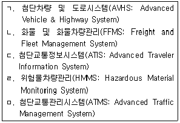
- ㄱ, ㄴ
- ㄱ, ㄹ
- ㄴ, ㄷ
- ㄴ, ㄹ
- ㄹ, ㅁ
(정답률: 53%)

2. RFID(Radio Frequency Identification) 태그의 사용주파수 대역별(bandwidth) 특징에 관한 설명으로 옳지 않은 것은?
- 용도면에서는 고주파대역보다 저주파대역이 주로 근거리용으로 사용된다.
- 시스템구축 비용면에서는 저주파대역보다 고주파대역이 저렴하다.
- 인식속도면에서는 저주파대역보다 고주파대역이 빠르다.
- 환경영향면, 특히 장애물에 대해서는 저주파대역보다 고주파대역이 많은 영향을 받는다.
- 제작크기면에서는 저주파대역보다 고주파대역의 태그를 소형으로 만들 수 있다.
(정답률: 68%)
3. 다음 ( )에 들어갈 용어를 바르게 나열한 것은?
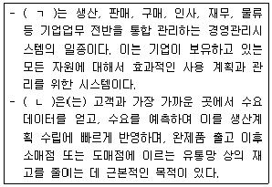
- ㄱ: MRP ㄴ: DRP
- ㄱ: ERP ㄴ: DRP
- ㄱ: ERP ㄴ: MRP
- ㄱ: ERP ㄴ: MRP II
- ㄱ: MRP ㄴ: BPR
(정답률: 46%)
4. 다음은 무엇에 관한 설명인가?
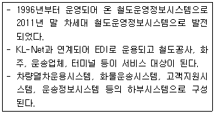
- CIM
- CORTIS
- KROIS
- CAMIS
- Port-MIS
(정답률: 59%)
5. 물류정보의 특징으로 옳지 않은 것은?
- 정보의 절대량이 많고 단순하다.
- 성수기와 평상시의 정보량 차이가 크다.
- 정보의 발생원, 처리장소, 전달대상 등이 넓게 분산되어 있다.
- 상품의 흐름과 정보의 흐름에 동시성이 요구된다.
- 기업 내 영업, 생산 등 다른 부문과의 관련성이 크다.
(정답률: 69%)
6. A기업의 실적은 다음과 같다. A기업이 물류비 10% 절감으로 얻을 수 있는 경상이익과 동일한 효과를 얻기 위해 필요한 추가 매출액은 얼마인가?
- 100억원
- 300억원
- 500억원
- 700억원
- 1,000억원
(정답률: 46%)
7. 물류의 범위와 영역에 관한 설명으로 옳지 않은 것은?
- 판매물류는 공장 또는 물류센터에서 출고되어 고객에게 인도될 때까지의 물류활동을 말한다.
- 조달물류는 제조업자가 원재료와 기계, 자재를 조달하기 위한 물류활동이고, 여기에는 도소매업자가 재판매를 위하여 상품을 구입하는 것도 포함된다.
- 생산물류란 자재가 생산공정에 투입되는 시점부터 제품이 생산 및 포장되어 나올 때까지의 물류활동을 말한다.
- 역물류는 폐기물류를 제외한 반품물류와 회수물류를 말한다.
- 사내물류는 생산공장 내에서 이루어지는 물류활동을 말한다.
(정답률: 64%)
8. 어느 기업의 주차별 주말재고량을 조사해 보니 다음과 같았다. 제품의 단가는 개당 10,000원이고 이자율은 연 12%이다. 단위당 월간 재고유지비는 제품가격의 5%이다. 평균재고는 (월초재고+월말재고)÷2로 산정한다. 이 경우 기업이 부담해야 할 8월의 재고부담이자와 재고부담이자를 제외한 재고유지 비용은 각각 얼마인가? (단, 결과값의 소숫점 이하는 절사함)
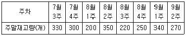
- 재고부담이자: 22,500원 재고유지비용: 112,500원
- 재고부담이자: 25,500원 재고유지비용: 127,500원
- 재고부담이자: 27,500원 재고유지비용: 137,500원
- 재고부담이자: 27,666원 재고유지비용: 138,333원
- 재고부담이자: 36,666원 재고유지비용: 183,333원
(정답률: 36%)
9. 물류관리의 원칙에 관한 내용이 옳게 짝지어진 것은?
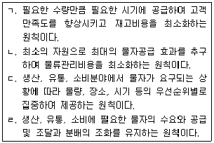
- ㄱ: 적시성 ㄴ: 경제성 ㄷ: 집중지원 ㄹ: 균형성
- ㄱ: 균형성 ㄴ: 집중지원 ㄷ: 적시성 ㄹ: 경제성
- ㄱ: 적시성 ㄴ: 경제성 ㄷ: 균형성 ㄹ: 집중지원
- ㄱ: 경제성 ㄴ: 집중지원 ㄷ: 적시성 ㄹ: 균형성
- ㄱ: 경제성 ㄴ: 적시성 ㄷ: 집중지원 ㄹ: 균형성
(정답률: 67%)
10. 세목별 물류비 분류 항목으로 옳지 않은 것은?
- 재료비
- 노무비
- 경비
- 이자
- 유통가공비
(정답률: 46%)
11. 물류의 정의로 옳지 않은 것은?
- 물적유통의 약어로 재화의 흐름이다.
- 생산단계에서 소비단계로의 물적 흐름으로 조달부문을 제외한 모든 활동이다.
- 포장, 운송, 보관, 하역 등의 활동을 종합적으로 계획ㆍ통제하는 것이다.
- '병참'이라는 군사용어에서 유래되어 구매, 생산, 판매가 통합된 물류개념을 로지스틱스라고도 한다.
- 공급자로부터 최종고객에게까지 이르는 유통채널의 전체흐름을 통합적으로 관리하는 것이다.
(정답률: 67%)
12. 물류의 기능을 설명한 것으로 옳지 않은 것은?
- 고객에게 제품을 공급하여 수요를 충족시킨다.
- 물류서비스의 차별화를 통하여 수요를 증대시킨다.
- 운송활동으로 제품의 품질을 향상시킨다.
- 생산과 소비의 수량 불일치를 완화시킨다.
- 보관 및 수송비용의 절감 등으로 원가를 낮춘다.
(정답률: 55%)
13. 물류 관련 용어에 관한 설명으로 옳은 것은?
- 6 시그마(6-Sigma): 기업간 상호 장점을 결합시킨 전략적 비즈니스를 의미하며 산업의 규모를 키우는데 서로 협력하는 기법
- BPR(Business Process Reengineering): 대량생산의 장점인 저렴한 가격과 차별화 전략의 장점을 합친 기법
- 벤치마킹(Bench-marking): 경쟁기업이나 업계 선두기업, 혹은 타 기업의 성공 사례를 기초로 자사의 혁신을 추구하는 기법
- Mass Customization: 정보기술을 창의적으로 활용하고 기존의 업무프로세스를 혁신적으로 설계하여 고객만족 및 내부 효율성을 극대화하는 기법
- Co-petition: 고도의 통계 기법을 활용하고 업무처리 프로세스를 종합적으로 개혁하여 제품의 불량률을 혁신적으로 개선하는 기법
(정답률: 64%)
14. POS(Point of Sales)시스템 도입 효과가 아닌 것은?
- 계산원의 생산성 향상
- 입력 오류의 방지
- 점포 사무작업의 간소화
- 가격표 부착작업의 감소
- 생산정보의 파악 용이
(정답률: 40%)
15. 카테고리킬러(Category Killer)에 관한 설명으로 옳은 것은?
- 통상 제조업자나 백화점이 소유한 오프 프라이스 스토어가 대부분이며 팩토리 아웃렛이라고도 한다.
- 한정된 제품계열에서 깊이 있는 상품 구색으로 전문점과 유사하나 저렴한 가격으로 판매하는 소매점으로 대량판매, 다점포화, 셀프서비스 방식을 채택하고 있다.
- 주로 교통이 편리한 도심에 위치하여 화려하고 거대한 점포를 갖고 있으며, 각종 상품을 부문별로 구성하여 관리하고 주로 선매품(shopping goods)을 취급하고 있는 소매점이다.
- 우리나라에서는 주로 주택가 주변에 다점포화 전략을 취하고 있으며, 시간, 장소, 상품 구색 등의 편의를 제공한다.
- 회원제로 일정한 회비를 내는 회원에게만 구매할 수 있는 자격을 주고 거대한 창고형 점포에서 할인된 가격에 상품을 판매하는 소매업이다.
(정답률: 60%)
16. 제품 A, B, C를 취급하는 어느 물류업체에 지불한 6월 물류비가 항목별로 다음과 같다. A, B 제품별 물류비는 각각 얼마인가?
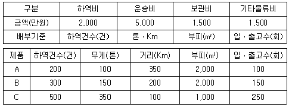
- A: 3,⑤0만원 B: 3,150만원
- A: 3,⑤0만원 B: 3,800만원
- A: 3,150만원 B: 3,⑤0만원
- A: 3,150만원 B: 3,800만원
- A: 3,800만원 B: 3,150만원
(정답률: 36%)
17. 기업의 구매관리에 관한 설명으로 옳지 않은 것은?
- 구매의 아웃소싱이 증가하면서 내부고객 만족에 대한 중요성이 증가하고 있다.
- 구매는 기업의 다른 기능인 마케팅, 생산, 엔지니어링, 재무와는 독립된 기능을 수행해야 한다.
- 최적의 공급자를 선정, 개발 및 유지해야 한다.
- 구매과정을 효율적이고 효과적으로 관리해야 한다.
- 기업의 전략과 일치하는 구매전략을 개발해야 한다.
(정답률: 57%)
18. 다음은 제품수명주기의 어느 단계에 관한 설명인가?
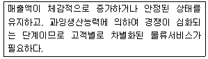
- 도입기
- 성장기
- 성숙기
- 쇠퇴기
- 소멸기
(정답률: 65%)
19. 물류고객서비스 요소에 관한 내용이 옳게 짝지어진 것은?
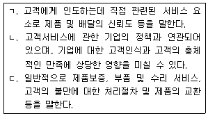
- ㄱ: 거래 전 요소 ㄴ: 거래 시 요소 ㄷ: 거래 후 요소
- ㄱ: 거래 전 요소 ㄴ: 거래 후 요소 ㄷ: 거래 시 요소
- ㄱ: 거래 시 요소 ㄴ: 거래 후 요소 ㄷ: 거래 전 요소
- ㄱ: 거래 시 요소 ㄴ: 거래 전 요소 ㄷ: 거래 후 요소
- ㄱ: 거래 후 요소 ㄴ: 거래 전 요소 ㄷ: 거래 시 요소
(정답률: 62%)
20. 물류관리전략의 수립 단계를 순서대로 옳게 나열한 것은?
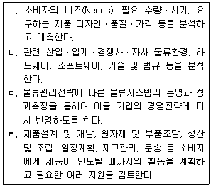
- ㄱ → ㄴ → ㄹ → ㄷ
- ㄱ → ㄹ → ㄴ → ㄷ
- ㄴ → ㄱ → ㄹ → ㄷ
- ㄴ → ㄷ → ㄹ → ㄱ
- ㄴ → ㄹ → ㄱ → ㄷ
(정답률: 45%)
21. 수요예측방법 중 시계열분석방법에서의 시계열(Time series) 구성요소에 포함되지 않는 것은?
- 추세변동
- 순환변동
- 계절변동
- 불규칙변동
- 시장변동
(정답률: 53%)
22. 주문주기시간(Order Cycle Time) 구성 요소 중 다음 설명에 해당하는 것은?
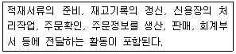
- 주문전달시간(Order Transmittal Time)
- 주문처리시간(Order Processing Time)
- 오더어셈블리시간(Order Assembly Time)
- 재고 가용성(Stock Availability)
- 인도시간(Delivery Time)
(정답률: 40%)
23. JIT와 MRP의 비교 설명으로 옳은 것은?(순서대로 구분-JIT-MRP)
- 관리 - 계획에 의한 소요개념 - 주문이나 요구에 의한 소요개념
- 거래 - 경제적 구매위주의 거래 - 구성원 입장에서 장기 거래
- 목표 - 낭비 제거- 계획 수행 시 필요량 확보
- 통제순위 - 작업배정 순서 - 간판의 도착 순서
- 시스템 - Push 시스템 - Pull 시스템
(정답률: 51%)
24. 수요예측 기법 가운데 정성적인 분석방법은?
- 지수평활법
- 이동평균법
- 회귀분석법
- 델파이법
- 시계열분석법
(정답률: 56%)
25. 4PL(Fourth Party Logistics)에 관한 설명으로 옳지 않은 것은?
- 3PL(Third Party Logistics), 물류컨설팅업체, IT업체 등이 결합한 형태이다.
- 솔루션 제공자, 공급체인의 통합자로 다양한 모델을 운용하여 수입을 창출하고 비용을 절감한다.
- 합작투자 또는 장기간의 제휴 형태이다.
- 공급체인의 효율화를 위한 발전적인 방안이다.
- 대표적인 형태는 그리드형 물류조직이다.
(정답률: 56%)
26. 수ㆍ배송 공동화의 도입배경이 아닌 것은?
- 주문단위의 소빈도 및 대량화
- 상권확대 및 빈번한 교차수송
- 화물자동차 이용의 비효율성
- 도시지역 물류시설 설치 제약
- 보관ㆍ운송 물류인력 확보 곤란
(정답률: 59%)
27. TQM(Total Quality Management)에 관한 설명으로 옳지 않은 것은?
- 품질관리 활동이 전사적으로 이루어져야 한다.
- 고객중심의 품질개념을 도입한 것이다.
- 품질에 대해 지속적인 개선이 이루어진다.
- 관리대상은 최종제품 뿐만 아니라 조직 내의 모든 활동과 서비스가 포함된다.
- 고객의 범위는 외부고객으로 한정한다.
(정답률: 67%)
28. 물류환경의 변화 추세에 관한 설명으로 옳지 않은 것은?
- 기업의 유연성 증가와 고정비용의 감소를 위하여 물류부문을 인소싱하는 추세이다.
- 물류비의 절감과 매출 증대의 중요성이 커지고 있다.
- 도시의 과밀화와 교통사정의 악화 등으로 물류업계의 협업화가 대안으로 제시되고 있다.
- 물류산업에 국제화가 진행되어 국내시장에서도 세계적인 물류기업과의 경쟁이 심화되고 있다.
- 환경문제가 중시되는 가운데 그린물류에 대한 관심이 높아지고 있다.
(정답률: 60%)
29. 글로벌 가치사슬(Global Value Chain)에 관한 설명으로 옳지 않은 것은?
- 제품의 기획, 생산, 조립, 마케팅, 고객서비스 등 제품의 가치창출을 위한 일련의 활동이 다수의 국가에서 이루어지는 것을 말한다.
- 글로벌 가치사슬의 형성은 가치창출을 위한 일련의 활동을 최적 분배하여 기업의 생산성을 향상시킨다.
- 개별 국가의 법적 규제나 가치사슬상의 리더 기업이 적용한 제품ㆍ프로세스 기준이 기술무역장벽으로 작용할 수 있다.
- 발전 배경으로는 WTO 체제의 발족, 수송기술의 발전, ICT 기술발전 및 표준확산 등을 들 수 있다.
- 글로벌 가치사슬이 심화됨에 따라 다국간에 걸친 기업간 분업에서 산업간 분업으로, 공정간 분업에서 제품분업으로 진전되고 있다.
(정답률: 57%)
30. 다음에서 설명하는 것은?
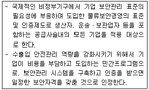
- AEO
- C-TPAT
- ISO 28000
- ISPS Code
- STP
(정답률: 37%)
31. 제약이론(Theory of Constraints)에 관한 설명으로 옳은 것은?
- 모토로라(Motorola)에서 처음 시행하였고 GE에서 발전시켰다.
- 모든 현상을 숫자로 표시하고 관리하는 것을 철학으로 한다.
- 통계적 기법을 활용한 품질개선 운동이다.
- 일반적으로 DMAIC라는 프로세스를 활용한다.
- 스루풋(throughput), 재고, 운영비용의 3요소를 제시했다.
(정답률: 52%)
32. 유닛로드시스템에 관한 설명으로 옳지 않은 것은?
- 대량의 단위화된 크기로 작업하므로 포장자재 비용이 증가한다.
- 시스템의 구축을 위해서 물류활동간 접점에서의 표준화가 중요하다.
- 추가적인 전용 설비 및 하역기계가 필요하다.
- 하역과 운송에 따른 화물 손상이 감소한다.
- 운송 및 보관업무의 효율적 운용이 가능하다.
(정답률: 58%)
33. 사업부제 물류조직에 관한 설명으로 옳지 않은 것은?
- 기업 규모가 커지면서 각 사업단위의 성과를 극대화하기 위해 생긴 조직이다.
- 상품별 사업부형과 지역별 사업부형 등이 있다.
- 각 사업부 내에 라인과 스태프 조직이 있다.
- 각 사업부간 수평적 교류가 용이하여 인력의 교차 활용이 가능하다.
- 사업부별로 모든 물류활동을 책임지고 직접 관할하므로 물류관리의 효율화 및 물류전문인력 육성이 가능하다.
(정답률: 57%)
34. 역물류(Reverse Logistics)에 관한 설명으로 옳은 것은?
- 역물류 활동이 환경오염을 유발하기도 한다.
- 반품의 발생시기와 상태가 예측 가능하다.
- 발생장소, 수량 측면에서 가시성 확보가 가능하다.
- 컨테이너, 파렛트, 빈용기 등의 재사용을 위한 물류활동을 반품물류라 한다.
- 고객에게 상품을 인도하는 과정에서 발생하는 물류활동을 회수물류라 한다.
(정답률: 50%)
35. 물류자회사에 관한 설명으로 옳지 않은 것은?
- 모회사의 물류관리 업무의 전부 또는 일부를 수행하기 위해 설립된 회사이다.
- 독립채산제를 취함으로써 물류비용 관리를 철저히 할 수 없다.
- 제3자 물류회사와 같은 물류전문기업으로 발전 가능하다.
- 모회사의 물류관리 업무 외에도 외부로 물류업무를 확대하여 수익성을 추구하기도 한다.
- 물류자회사를 위한 SBU(Strategy Business Unit), VBU(Venture Business Unit) 제도 등이 있다.
(정답률: 54%)
36. e-SCM의 도입효과가 아닌 것은?
- 공급자와 구매자간 신속한 의사소통이 가능하여 중간유통업체의 배제를 통해 제품의 리드타임을 단축할 수 있다.
- 전략적 제휴, 장기거래 등이 늘어나면서 거래비용이 증가한다.
- 가상네트워크를 통해 수평적 사업기회의 확대가 가능하다.
- e-SCM의 효과적 운영을 위해서 ERP, CRM 등의 지원이 필요하다.
- 원자재 공급업체, 생산업체, 물류업체간에 핵심정보의 피드백이 원활하게 된다.
(정답률: 56%)
37. MRP에 관한 설명으로 옳지 않은 것은?
- 배치(batch) 제품, 조립품 생산 등에 적합한 자재관리 기법이다.
- 주 구성요소는 MPS(Master Production Schedule), BOM(Bill of Materials), 재고기록철 등이다.
- MRP Ⅱ로 확장되었다.
- MPS의 변경을 수용할 수 없다.
- 완제품의 수요예측으로부터 시작된다.
(정답률: 60%)
38. EU의 REACH(Registration, Evaluation, Authorization and Restriction of Chemicals)에 관한 설명으로 옳지 않은 것은?
- 기존 EU 내 화학물질 관련 법령을 통합한 제도이다.
- 기한 내 사전등록을 하지 않는 기업은 대 EU 수출이 사실상 불가능하다.
- REACH 등 국제환경규제의 도입으로 공급사슬상의 협력업체간 상호 의존성이 더욱 심화되고 있다.
- 국내에서는 REACH에 대응하기 위한 법률이 제정되어 있지 않다.
- 국내 기업이 EU로 수출할 경우에 연간 1톤 이상 제조ㆍ수입되는 기존 화학물질과 완제품내의 위해성 정보를 등록해야 한다.
(정답률: 54%)
39. 포장의 모듈화에 관한 다음 설명 중 ( )에 들어갈 내용이 옳게 짝지어진것은?
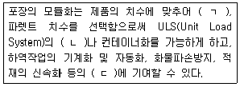
- ㄱ: 포장 치수 ㄴ: 파렛트화 ㄷ: 물류합리화
- ㄱ: 컨테이너화 ㄴ: 파렛트화 ㄷ: 물류합리화
- ㄱ: 포장 치수 ㄴ: 물류합리화 ㄷ: 물류표준화
- ㄱ: 컨테이너화 ㄴ: 포장 치수 ㄷ: 물류표준화
- ㄱ: 컨테이너 치수 ㄴ: 파렛트화 ㄷ: 물류표준화
(정답률: 54%)
40. 파렛트 풀 시스템(Pallet Pool System)에 관한 설명으로 옳지 않은 것은?
- 파렛트의 규격을 표준화하여 공동으로 사용하는 것을 말한다.
- 일관 파렛트화의 실현으로 발송지에서 최종 도착지까지 일관운송이 가능하게 된다.
- 업종 간에 파렛트를 공동으로 이용하여 성수기와 비수기의 파렛트 수요 변동에 대응할 수 있다.
- 공파렛트 회수 문제 해소 등 파렛트 관리가 용이하다.
- 화주 및 물류업체의 물류비 부담을 증가시킨다.
(정답률: 62%)
2과목: 화물수송론
41. 다음은 운송수단 선택 시 고려해야 할 사항이다. 이에 해당되는 요건은?
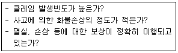
- 안전성
- 확실성
- 신속성
- 편리성
- 경제성
(정답률: 50%)
42. 운송에 관한 설명으로 옳지 않은 것은?
- 운송용역은 운송수단과 노동력이 결합되어 화물을 목적지까지 이동시키는 것이다.
- 운송수요는 화물의 종류, 운송량, 운송거리, 운송시간, 운송비용 등을 기본적인 구성요소로 한다.
- 운송수요의 탄력성은 운임의 영향을 받기보다는 화물의 대체성 여부에 대부분 영향을 받는다.
- 운송수단의 선택 시에는 운송물량, 운임, 기후의 영향, 운송의 안전성, 중량, 배차 및 배선 등을 고려해야 한다.
- 부적운송(Unused Capacity)은 차량 전체 운임이 지급되지만, 적재공간이 일부 비어있는 상태로 운송하는 것을 말한다.
(정답률: 42%)
43. 운송방식에 관한 설명으로 옳지 않은 것은?
- 항공운송은 긴급서류, 소형화물의 급송에 적합하다.
- 철도운송은 도로운송에 비해 안전도가 높다.
- 해상운송은 대량의 화물을 저렴하게 운송하는데 적합하다.
- 항공운송은 해상운송에 비해서 운송비용이 높다.
- 도로운송은 소규모 자본으로도 누구나 참여할 수 있기 때문에 규모의 경제성이 크다.
(정답률: 48%)
44. 운송시장의 환경과 운송형태의 변화에 따른 설명으로 옳지 않은 것은?
- 글로벌 아웃소싱의 확대
- 국제 복합운송의 확대
- 물류보안 및 환경 규제 완화
- 구매고객에 대한 서비스 수준 향상
- 공동수배송시스템의 활용도 향상
(정답률: 49%)
45. 전용특장차 중 분립체(Solid bulk) 운송 차량에 관한 설명으로 옳은 것은?
- 기계 및 자동차 부품을 운송하는 차량이다.
- 냉동식품이나 야채 등 온도관리가 필요한 화물운송에 사용된다.
- 시멘트, 곡물 등을 자루에 담지 않고 산물(散物)상태로 운반하는 차량이다.
- 각종 액체를 운송하기 위한 차량으로서 일반적으로 탱크로리라고 부른다.
- 콘크리트를 뒤섞으면서 토목건설 현장 등으로 운송하는 차량이다.
(정답률: 49%)
46. 물류터미널의 기능으로 옳지 않은 것은?
- 소매시장 기능
- 화물보관 기능
- 운송수단 간 연계 기능
- 화물운송의 중계기지 기능
- 유통가공 기능
(정답률: 45%)
47. 다음에 해당되는 물류기술은?
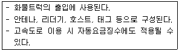
- SMS(Short Message Service)
- RFID(Radio Frequency Identification)
- PDA(Personal Digital Assistants)
- GPS(Global Positioning System)
- CDMA(Code Division Multiple Access)
(정답률: 51%)
48. 우리나라 화물자동차 운행의 제한 사항에 관한 내용으로 옳은 것은?
- 차량의 폭이 2.0미터, 높이가 3.0미터 길이를 초과하는 차량
- 차량의 폭이 2.0미터, 높이가 3.5미터 길이를 초과하는 차량
- 차량의 폭이 2.5미터, 높이가 3.0미터 길이를 초과하는 차량
- 차량의 폭이 2.5미터, 높이가 3.5미터 길이를 초과하는 차량
- 차량의 폭이 2.5미터, 높이가 4.0미터 길이를 초과하는 차량
(정답률: 39%)
49. 화물의 운임산정 기준에 관한 설명으로 옳지 않은 것은?
- 개수기준은 중량이나 부피보다는 개수를 기준으로 운임을 산정하는 것이다.
- 종가기준은 고가품에 대하여 수량을 기준으로 운임을 산정하는 것이다.
- 중량기준은 부피에 비해서 시멘트, 철강과 같이 무거운 화물에 적용되는 것이다.
- 용적기준은 중량에 비해서 양모, 면화, 코르크, 목재 등과 같이 부피가 큰 화물에 적용되는 것이다.
- 특수화물운임기준은 화약과 같은 특수화물에 대하여 추가 또는 할증운임을 적용하는 것이다.
(정답률: 40%)
50. 화물자동차운송의 분류에 관한 설명으로 옳은 것은?
- 자가운송: 운송대가를 받기 위하여 운송업자가 화물자동차를 확보하고, 타인의 화물용역을 수탁 받아 행하는 운송
- 트럭단위(Truck Load)운송: 하나의 화물자동차에 다양한 화주의 화물을 함께 적재하여 행하는 운송
- 집배운송: 화물자동차를 이용하여 여러 화주를 순회하면서 화물을 집하 및 배송 하는 운송
- 영업운송: 주로 대형차량을 이용하여 대량으로 자기화물을 터미널과 터미널 간에 행하는 운송
- 혼재운송: 단일 화주의 화물을 하나의 화물자동차에 적재하여 행하는 운송
(정답률: 47%)
51. 다음 설명으로 옳은 것은?
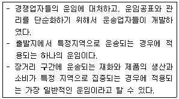
- 단일운임
- 비례운임
- 지역(구역)운임
- 체감운임
- 수요기준운임
(정답률: 40%)
52. 운송효율을 향상시키는 방법으로 옳지 않은 것은?
- 배차를 장ㆍ단거리로 분리하고, 분리된 배차를 각각 전담하게 한다.
- 출하단위와 출하처를 일정 이상이 되도록 하여 운송물량을 대형화한다.
- 소량으로 운송되는 화물을 대량으로 운송하기 위해 혼재시스템을 구축한다.
- 상ㆍ하차 대기시간을 줄이고, 차량의 도착 예정시간을 미리 통보하여 하역작업을 준비하게 한다.
- 상ㆍ하차 시간을 최대한 단축하기 위해 하역의 기계화 및 하역 장비의 전용화를 한다.
(정답률: 40%)
53. 유가보조금(유류세 연동보조금)제도의 지급대상에 해당되지 않는 것은? (단, 경유 및 액화석유가스 사용에 한함)
- 택시
- 노선버스
- 연안화물선
- 사업용 화물자동차
- 화물전용 항공기
(정답률: 34%)
54. 철도운송에 관한 설명으로 옳은 것은?
- 이단적열차(Double Stack Train): 컨테이너가 적재된 트레일러를 무개화차위에 그대로 적재하여 운송하는 열차
- 철도ㆍ도로겸용시스템(Bimodal System): Box Car, Hopper Car, 곤돌라화차 등의 각종 철도차량을 전기 또는 디젤기관차에 직접 연결하여 화물을 운송하는 방식
- 곤돌라화차(Gondola Car): 날씨 또는 기후로부터 화물이 보호될 수 있도록 상자 형태로 제작된 화차
- 덮개형 개저식화차(Covered Hopper Car): 천장 부분에 적재용 뚜껑이 부착되어 있고, 밑 부분에 중력양륙 또는 공기양륙 장치가 부착되어 있는 화차
- 무개화차(Flat Car): 상면이 평평하여 가공되지 않은 곡물 등의 산화물을 운송하는데 적합한 화차
(정답률: 40%)
55. 철도운송에 관한 설명으로 옳지 않은 것은?
- 초기 구축비용 등 고정비용이 많이 든다.
- 국제적으로 표준화된 Rail Gauge(철도 노선의 폭)를 사용하고 있다.
- 대단위 화물을 육로를 통해 장거리 운송할 때 적합한 운송 수단이다.
- 터널과 다리 등을 통과하기 때문에 적재화물의 크기에 대한 제한이 있다.
- 철도운송은 해상운송과 연계한 다양한 경로(Route)가 개발되어 있다.
(정답률: 40%)
56. 우리나라 철도화물의 운임체계에 관한 설명으로 옳은 것은?
- 공컨테이너의 운임은 규격별 영(盈, 적재)컨테이너 운임의 74%를 적용한다.
- 컨테이너취급운임은 운송거리, 화물중량 및 컨테이너 종류별 운임률을 반영하며, 1km 미만의 거리는 반올림하여 계산한다.
- 철도화물의 운임체계는 기본적으로 단일운임제를 채택하고 있다.
- 철도컨테이너 화물의 최저운임은 컨테이너 규격에 관계없이 80km의 운송거리에 해당하는 운임이다.
- 일반화차취급운임은 운송거리와 종별운임률(운임단가)을 곱해서 산출하며, 특대화물, 위험물 등의 화물에 따라 할증요율을 부과한다.
(정답률: 34%)
57. H기업의 가구 제조공장에서 판매처까지의 거리가 총 100km이고, 운송량은 5톤이다. 아래와 같은 화물자동차운송과 철도운송 수단별 비용에 관한 설명으로 옳은 것은? (단, 기본운임은 거리 및 운송량에 상관없는 고정비임)
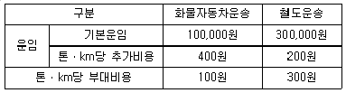
- 철도운송 시 발생되는 추가비용과 부대비용은 서로 같다.
- 철도운송 시 발생되는 추가비용은 화물자동차운송 시 발생되는 추가비용보다 높다.
- 철도운송 시 발생되는 총 비용 중, 추가비용의 비중이 가장 높다.
- 화물자동차운송 시 발생되는 총 비용 중, 추가비용의 비중이 가장 높다.
- 화물자동차운송 시 발생되는 총 운송비가 철도운송 시 발생되는 총 운송비보다 높다.
(정답률: 50%)
58. 용선운송계약에 관한 설명으로 옳지 않은 것은?
- 전부용선계약(Whole charter party)은 선복(Ship's space)의 전부를 빌리는 것이다.
- 일부용선계약(Partial charter party)은 선복(Ship's space)의 일부를 빌리는 것이다.
- 항해용선계약(Voyage charter party)은 특정항구에서 특정항구까지 선복(Ship's space)을 빌리는 것이다.
- 기간용선계약(Time charter party)은 일정기간을 정하여 선복(Ship's space)을 빌리는 것이다.
- 나용선계약(Bareboat charter party)은 용선자가 특정항구에서 특정항구까지 임차료를 계산하고, 선주로부터 선박 자체만을 임차하는 것이다.
(정답률: 49%)
59. 컨테이너를 철도로 운송하기 위하여 사용되는 적양방식의 하나로 철도역에 하역설비가 없는 경우, 컨테이너를 적재한 피견인차가 경사로를 통하여 적재 및 양륙되는 방식은?
- COFC (Container On Flat Car)
- TOFC (Trailer On Flat Car)
- Hub & Spoke System
- ULD (Unit Load Device)
- RORO (Roll On Roll Off)
(정답률: 32%)
60. 다음 선박에 관한 설명으로 옳은 것은?
- WIG선: 자항능력이 없는 선박으로서 예인선에 의해 예인되는 선박
- LASH선: 화물이 적재된 부선을 본선에 적입 및 운송하는 특수선박
- LOLO선: 산화물의 운송을 위하여 제작된 선박
- 산물선(Bulk Carrier): 수면 위를 1∼5m 높이로 낮게 떠서 운항할 수 있는 선박
- Barge선: 본선 또는 육상에 설치되어 있는 갠트리 크레인으로 컨테이너를 수직으로 들어 올려 적재, 양륙하는 방식의 선박
(정답률: 42%)
61. 정기선운임에 관한 설명으로 옳지 않은 것은?
- 특정항로의 운임률표가 불특정 다수의 화주에게 공표되어 있다.
- Bunker Adjustment Factor는 유류할증료이다.
- Congestion Surcharge는 도착항의 항만사정이 혼잡하여 선박이 대기할 경우에 내는 할증료이다.
- Freight All Kinds Rate는 화물의 종류, 중량, 용적에 따라 차등적으로 부과되는 운임이다.
- 정기선 운임은 기본운임(basic rate)과 할증료(surcharge) 및 기타 추가요금(additional charge) 등으로 구성된다.
(정답률: 49%)
62. 컨테이너를 이용한 운송의 장점으로 옳지 않은 것은?
- 운임 증가
- 인건비 절감
- 화물의 안전성 제고
- 신속한 하역
- 정박기간의 단축
(정답률: 50%)
63. 컨테이너터미널에서 컨테이너를 취급하는 운송장비에 관한 설명으로 옳지 않은 것은?
- 야드 트랙터(Yard Tractor)는 야드 내의 작업용 컨테이너 운반트럭이다.
- 지게차(Fork Lift)는 컨테이너터미널에서 컨테이너선에 양ㆍ적하하는 하역장비이다.
- 윈치 크레인(Winch Crane)은 크레인 자체를 회전시키면서 컨테이너 트럭이나 무개화차로부터 컨테이너를 양ㆍ적하하는 하역장비이다.
- 리치 스태커(Reach Stackers)는 컨테이너 운반용으로 주로 사용되며 컨테이너의 적재 및 위치이동, 교체 등에 사용되는 하역장비이다.
- 섀시(Chassis)는 컨테이너를 탑재하여 운반하는 대차이다.
(정답률: 40%)
64. 항공화물운송의 특성으로 옳지 않은 것을 모두 고른 것은?
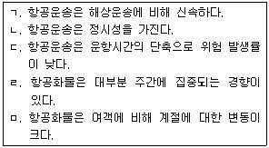
- ㄱ, ㄴ
- ㄱ, ㄷ
- ㄴ, ㄹ
- ㄷ, ㅁ
- ㄹ, ㅁ
(정답률: 42%)
65. 항공화물운송대리점(air cargo agent)과 항공운송주선인(air freight forwarder)에 관한 설명으로 옳은 것을 모두 고른 것은?
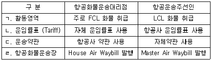
- ㄱ, ㄴ
- ㄱ, ㄷ
- ㄴ, ㄹ
- ㄱ, ㄴ, ㄷ
- ㄴ, ㄷ, ㄹ
(정답률: 43%)
66. 운송주선인이 취급할 수 있는 업무에 관한 설명으로 옳지 않은 것은?
- 운송주선인은 화주에게 화물의 성질에 따라 가장 적절한 포장형태 등 각종 조언을 한다.
- 운송주선인은 송화인의 위탁에 의해 수출화물을 본선에 인도하거나, 수화인의 위탁에 의해 수입화물을 본선으로부터 인수하는 자이다.
- 운송주선인은 화주를 대신해서 화물의 운송에 따르는 보험을 처리해 줄 수 있다.
- 우리나라의 경우, 운송주선인은 화주의 의뢰에 따라 관세사가 행하는 업무인 수출입신고를 이행할 수 있다.
- LCL 화물인 경우, 운송주선인은 혼재업자로서 업무를 수행한다.
(정답률: 33%)
67. 다음 네트워크에서 A에서 G까지 최단거리의 경로를 선택하여 도착할 경우, 총 소요거리는 얼마나 되는가? (단, 경로(Route)별 숫자는 km임)
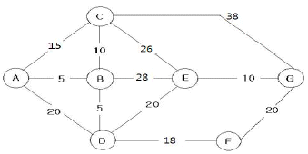
- 38 km
- 40 km
- 43 km
- 48 km
- 51 km
(정답률: 45%)
68. 3개 산지의 원재료 공급량이 각각 100, 110, 60이고, 4개 공장의 원재료 수요량이 각각 80, 110, 40, 40인 운송계획이 있다. 산지에서 공장까지의 운송비는 운송표 각 칸의 우측하단에 제시되어 있다. 보겔추정법(Vogel's Approximation Method)으로 초기해를 구하면 최소 총 운송비용은? (단위: 원, 톤)
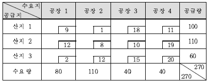
- 1,650
- 1,670
- 1,690
- 1,700
- 1,730
(정답률: 34%)
69. 서울에서 대전까지 편도운송을 하는 K사의 화물차량 운행상황은 아래와 같다. 만약, 차량 1대당 1회 적재량을 1,000 상자에서 1,200 상자로 증가시켜 적재효율을 높였을 경우, K사의 1대당 1일 운송횟수와 월 운송비 절감액은?
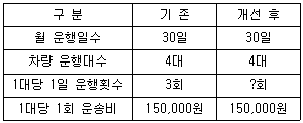
- 2.0회, 6,000,000원
- 2.0회, 7,500,000원
- 2.0회, 9,500,000원
- 2.5회, 6,500,000원
- 2.5회, 9,000,000원
(정답률: 31%)
70. 다음 운송실적을 가지고 있는 적재중량 25 ton 화물자동차의 연료소모량은? (단, 실차(영차)운행 시에는 tonㆍkm당 연료소모기준을 적용함)
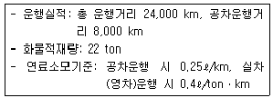
- 8,400ℓ
- 10,800ℓ
- 12,560ℓ
- 142,800ℓ
- 211,200ℓ
(정답률: 30%)
71. M사 화물자동차의 최근 1개월 간의 운행실적에 대한 결과 값으로 옳지 않은 것은?
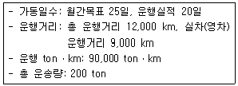
- 가동률은 80 %이다.
- 실차(영차)율은 75 %이다.
- 평균 운송량은 10 ton이다.
- 평균 운송횟수는 19회이다.
- 평균 운송거리는 450 km이다.
(정답률: 36%)
72. 배송 방법에 관한 설명으로 옳지 않은 것은?
- 다이어그램배송: 배송처에 대한 도착 및 출발시간을 고정시키지 않고, 매일 동일한 경로와 시간에 배송하는 방법
- 라우터배송: 일정한 배송경로를 정하여 반복적으로 배송하되, 경로상의 모든 거래처에 대하여 배송하는 방법
- 변동다이어그램배송: 배송처 및 배송물량의 변화가 심할 때, 매일 방문하는 배송처, 방문순서, 방문시간 등이 변동되는 방법
- 적합배송: 사전 설정된 경로에 배송할 물량을 기준으로 적합한 크기의 차량을 배차하여 배송하는 방법
- 단일배송: 하나의 배송처에 1대의 차량을 배차하여 배송하는 방법
(정답률: 40%)
73. 효율적인 화물자동차 운송시스템 설계를 위한 기본 요건에 관한 설명으로 옳지 않은 것은?
- 지정된 시간 내에 화물을 목적지에 배송할 수 있어야 한다.
- 운송, 배송 및 배차계획 등을 조직적으로 실시해야 한다.
- 최저주문단위제를 폐지하여 배송 주문량 및 주문 횟수를 확대한다.
- 수주에서 출하까지 작업의 표준화 및 효율화를 수행해야 한다.
- 적절한 유통재고량 유지를 위한 다이어그램배송 등을 사용한 체계적인 운송계획을 수립해야 한다.
(정답률: 55%)
74. 서울에서 부산까지 화물운송을 위한 최대 운송가능량 및 운송비가 아래와 같이 주어질 경우, 최소비용운송계획법(Least Cost Flow Problem)에 따른 서울에서 부산까지의 최소 총 운송비용은? (단, 각 경로에 표시된 숫자는 구간별 최대 운송가능량, ( )는 해당 경로의 단위당 운송비임)
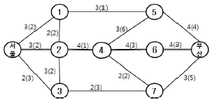
- 50
- 60
- 70
- 80
- 90
(정답률: 23%)
75. 수요지와 공급지 간의 비용이 아래와 같이 제시될 경우, 최소비용법(Least-Cost Method)과 보겔추정법(Vogel's Approximation Method)을 이용한 초기해 산출 값에 관한 설명으로 옳은 것은? (단위: 원/톤, 공급지에서 수요지까지의 운송비는 운송표 각 칸의 우측 하단에 제시되어 있음)
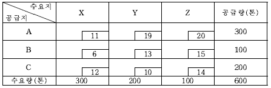
- 최소비용법에 의한 최소 총 운송비용은 6,700원이다.
- 보겔추정법에 의한 최소 총 운송비용은 6,700원이다.
- 최소비용법에 의한 공급지 A에서 수요지 X까지의 공급량은 300톤이다.
- 보겔추정법에 의한 공급지 C에서 수요지 Y까지의 공급량은 100톤이다.
- 보겔추정법에 의한 공급지 B에서 수요지 Z까지의 공급량은 100톤이다.
(정답률: 33%)
76. 운송비에 관한 설명으로 옳지 않은 것은?
- 운송비는 화물량의 증감에 영향을 받지 않는 고정비이다.
- 용차운송비는 부정기 차량에 의해서 발생되는 비용이다.
- 노선운송비는 정해진 노선일정(schedule)에 의해 정기적인 운행으로 발생되는 비용이다.
- 공간ㆍ시간적 이동에 의한 효용과 가치를 창조하기 위해서 발생되는 비용이다.
- 화물을 특정 지점에서 특정 지점까지 운송하는데 발생하는 비용이다.
(정답률: 50%)
77. 도로운송의 특성에 관한 설명으로 옳은 것을 모두 고른 것은?
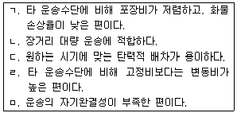
- ㄱ, ㄴ
- ㄱ, ㄹ
- ㄴ, ㄷ
- ㄷ, ㄹ
- ㄹ, ㅁ
(정답률: 54%)
78. 택배 관련 사업에 관한 설명으로 옳지 않은 것은?
- 택배사업을 영위하려는 자는 화물자동차운송 가맹사업 허가를 취득해야 한다.
- 택배운송사업은 장치산업, 네트워크, 정보시스템 및 노동집약적인 특징이 있다.
- 공정거래위원회의 택배표준약관에서는 운송물 1 포장의 가액이 300만 원을 초과하는 경우에는 수탁을 거절할 수 있다.
- 다품종소량 생산체제 확산으로 다빈도 배송이 요구되고 있다.
- 공정거래위원회의 택배표준약관에서는 수탁 가능한 운송물의 크기와 무게를 택배사업자가 정할 수 있다.
(정답률: 38%)
79. 택배사업에서 사업자의 운송물 수탁거절 사유에 해당되지 않는 것은? (단, 공정거래위원회 택배표준약관 제10026호에 근거함)
- 고객이 운송장에 필요한 사항을 기재하지 않은 경우
- 운송물이 살아있는 동물인 경우
- 운송물의 포장이 적합하지 아니하여 사업자가 임의대로 재포장하고, 추가요금을 받은 경우
- 운송물이 재생 불가능한 계약서, 원고, 서류 등인 경우
- 운송이 천재지변, 기타 불가항력적인 사유로 불가능한 경우
(정답률: 48%)
80. 택배표준약관(공정거래위원회 표준약관 제10026호)상 운임의 청구와 유치권에 관한 설명으로 옳지 않은 것은?
- 수화인이 운임을 지급하지 않는 때에는 사업자는 운송물을 유치할 수 있다.
- 운송물이 포장 당 50만 원을 초과하거나 운송 상 특별한 주의를 요하는 것일 때에는 사업자는 따로 할증요금을 청구할 수 있다.
- 고객의 사유로 운송물을 돌려보내는 경우, 사업자는 따로 추가요금을 청구할 수 있다.
- 운임 및 할증요금은 미리 약관의 별표로 제시하고 운송장에 기재한다.
- 사업자는 고객과의 합의가 있더라도 운송물을 인도할 때 수화인에게 운임을 청구하는 것은 불가능하다.
(정답률: 51%)
3과목: 국제물류론
81. 국제물류관리가 필요한 이유로 옳지 않은 것은?
- 물류가 국내제품의 수출경쟁력 증가에 기여하기 때문이다.
- 물류정보시스템의 발전으로 물류관리가 복잡해지고 난해해짐에 따라 효율성이 저하되기 때문이다.
- 해외고객의 다양한 요구에 신속하고 정확하게 반응하기 위해서이다.
- 제품의 수명주기가 짧아짐에 따라 국제물류의 신속성이 요구되기 때문이다.
- 해외거점확대, 해외조달, 아웃소싱이 증가함에 따라 공급망이 국내에서 해외로 확장되기 때문이다.
(정답률: 59%)
82. 국제물류관리에 영향을 줄 수 있는 환경 변화로 옳은 것을 모두 고른 것은?
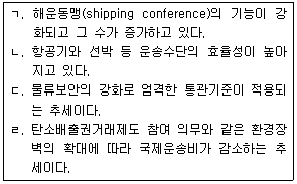
- ㄱ, ㄷ
- ㄱ, ㄹ
- ㄴ, ㄷ
- ㄴ, ㄷ, ㄹ
- ㄱ, ㄴ, ㄷ, ㄹ
(정답률: 40%)
83. 국제물류관리의 효율화 방안으로 옳지 않은 것은?
- 운송수단 내 적재효율을 높이고 운송경로는 최단거리를 선택한다.
- 포장은 견고하게 하되 과포장을 피한다.
- 화물의 재고 현황을 파악하기 위해 POS 시스템과 같은 IT 기술을 활용한다.
- 혼재를 통해 운송의 효율을 높인다.
- 효율적인 하역작업을 위해 하역횟수를 늘리고 1회당 하역량을 줄인다.
(정답률: 58%)
84. 해외직접구매의 확산이 물류부문에 미치는 영향으로 옳지 않은 것은?
- 물류정보시스템의 필요성 증가
- 국내외 제조업체들의 자가물류 증가
- 통관업무를 담당하는 전문 인력에 대한 수요 증가
- 정확하고 체계적인 다빈도 소량 운송의 필요성 증가
- 글로벌공급망관리의 필요성 증가
(정답률: 57%)
85. 용선계약과 관련된 용어의 설명으로 옳지 않은 것은?
- LDG Port: 선적항
- DEM/DES: 체선료와 조출료
- CQD: 관습적 조속하역
- FIOST: 선적, 양하, 본선 내 적부, 화물정리 비용을 선주가 부담함
- WWD SHINC: 일요일과 공휴일이 하역작업 가능한 정박기간에 포함됨
(정답률: 46%)
86. 편의치적(Flag of Convenience)에 관한 설명으로 옳지 않은 것은?
- 편의치적은 선주가 소유한 선박을 자국이 아닌 외국에 등록하는 제도이다.
- 전통적 해운국들은 편의치적의 확산을 방지하기 위해 제2선적 제도를 고안하여 도입하였다.
- 선주는 고임의 자국선원을 승선시키지 않아도 되므로 편의치적을 선호한다.
- 선박의 등록세, 톤세 등 세제에 대한 이점이 있기에 선주가 편의치적을 선호하는 경우도 있다.
- 편의치적국들은 선박의 운항 및 안전기준 등의 규제에 대해서는 전통적 해운국과 차이가 없다.
(정답률: 62%)
87. 컨테이너운송과 복합운송에 관한 설명으로 옳지 않은 것은?
- 복합운송은 하나의 운송수단에서 다른 운송수단으로 신속하게 환적할 수 있는 새로운 운송기술의 개발에 힘입어 활성화되었다.
- 컨테이너운송의 장점은 화물의 신속하고 안전한 환적이 가능하며, 하역의 기계화로 시간과 비용을 절감할 수 있다는 것이다.
- 컨테이너운송은 일관운송을 제공하는 복합운송을 실현하는데 적합하다.
- 컨테이너운송과 복합운송을 동일시해도 무리가 없다.
- 북미 및 시베리아 횡단철도와 해상운송을 연계하는 복합운송 경로의 개척에 힘입어 해륙복합운송이 발달하였다.
(정답률: 51%)
88. 다음 화물을 해상운송할 경우, 적용되는 운임톤(Freight ton or Revenue ton)은?
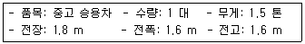
- 1.5톤
- 4.608톤
- 4.804톤
- 5.0톤
- 6.108톤
(정답률: 40%)
89. 국제복합운송시스템의 유형과 경로에 관한 설명으로 옳은 것은?
- TCR은 연운항에서 중국대륙을 관통하여 유럽까지 연결될 수 있다.
- TSR은 1970년대 시베리아 횡단선로가 개통된 후 이용되기 시작하였다.
- ALB는 미국 내륙 지방을 목적지 또는 출발지로 한다.
- TMR은 몽고 전구간의 단선 철도로 구성되어 있다.
- Land Bridge는 원래 특정구간에 대한 해상루트의 대체경로로 등장했고, 철도 관련자들의 적극적인 노력에도 불구하고 주요경로로 자리 잡지 못하고 있다.
(정답률: 41%)
90. 다음 국제운송조약 중 해상운송과 관련되는 조약을 모두 고른 것은?
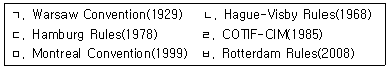
- ㄱ, ㄹ
- ㄴ, ㄷ
- ㄱ, ㄹ, ㅁ
- ㄴ, ㄷ, ㅂ
- ㄴ, ㄷ, ㅁ, ㅂ
(정답률: 50%)
91. 다음 컨테이너들의 수량을 TEU로 환산하여 합한 값은?
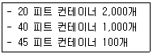
- 2,000 TEU
- 3,000 TEU
- 3,225 TEU
- 4,000 TEU
- 4,225 TEU
(정답률: 46%)
92. 국제운송서류에 관한 설명으로 옳지 않은 것은?
- Shipping Request(S/R)는 화주가 선사에 제출하는 운송의뢰서로서 화물의 명세가 기재된다.
- Booking Note(B/N)는 화주가 제출한 S/R에 기초해 선사가 선적관련 사항을 화주별로 작성한 것으로 화물의 명세, 필요 컨테이너 수, pick-up 요청일시 등이 기재된다.
- Equipment Receipt(E/R)는 컨테이너, 샤시 등 기기류의 CY 또는 ICD 반출입 시인계인수를 증명하는 서류로 터미널 또는 ICD operator에 의해 작성된다.
- Mate's Receipt(M/R)는 선적 중인 화물의 개수, 화인, 포장상태, 화물신고 등을 기재하는데 화주 및 선주의 요청에 따라 검수인이 작성한다.
- Shipping Order(S/O)는 선적요청을 받은 선사가 송하인에게 교부하는 선적승낙서이자 선사가 본선의 선장에게 송하인의 화물을 선적하도록 지시하는 선적지시서이다.
(정답률: 38%)
93. Montreal Convention(1999)의 내용이다. ( )에 들어갈 용어로 옳은 것은?
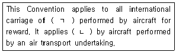
- ㄱ: persons, baggage or cargo
ㄴ: equally to gratuitous carriage - ㄱ: persons or cargo
ㄴ: equally to gratuitous carriage - ㄱ: cargo
ㄴ: to the carriage except for gratuitous carriage - ㄱ: persons or cargo
ㄴ: to the carriage except for gratuitous carriage - ㄱ: persons, baggage or cargo
ㄴ: to the carriage except for gratuitous carriage
(정답률: 35%)
94. 해상보험 관련 용어에 관한 설명으로 옳지 않은 것은?
- 손해방지비용(sue and labor charge)은 보험목적의 손해를 방지 또는 경감하기 위하여 피보험자 또는 그의 사용인 및 대리인이 지출한 비용을 말한다.
- 보험료(premium)는 보험자의 위험부담에 대한 대가로서 피보험자 또는 보험계약자가 보험자에게 지급하는 금전을 말한다.
- 보험가액(insurable value)이란 피보험자가 실제로 보험에 가입한 금액으로서 손해발생 시 보험자가 부담하는 보상책임의 최고한도액을 말한다.
- 고지의무(duty of disclosure)란 피보험자 또는 보험계약자가 알고 있는 모든 중요한 사항을 계약이 성립되기 이전에 보험자에게 고지하는 것을 말한다.
- 대위(subrogation)는 보험자가 보험금을 지급한 경우 피보험자가 보험의 목적에 대해 가지는 권리 및 제3자에 대하여 가지는 권리를 보험자가 승계하는 것을 말한다.
(정답률: 41%)
95. Incoterms® 2010에 규정된 용어의 설명이다. ( )에 들어갈 용어로 옳은 것은?
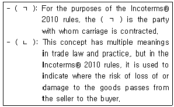
- ㄱ: Carrier ㄴ: Delivery
- ㄱ: Custom ㄴ: Delivery
- ㄱ: Carrier ㄴ: Custom
- ㄱ: Packing ㄴ: Delivery
- ㄱ: Carrier ㄴ: Packing
(정답률: 50%)
96. 다음 ( )에 들어갈 용어로 옳은 것은?
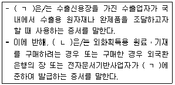
- ㄱ: 내국신용장 ㄴ: 보증신용장
- ㄱ: 내국신용장 ㄴ: 구매확인서
- ㄱ: 구매확인서 ㄴ: 보증신용장
- ㄱ: 보증신용장 ㄴ: 회전신용장
- ㄱ: 구매확인서 ㄴ: 회전신용장
(정답률: 46%)
97. Marine Insurance Act(1906)에서 해상손해에 관한 설명으로 옳지 않은 것은?
- 현실전손의 경우에는 위부의 통지를 할 필요가 없다.
- 해상사업에 종사하는 선박이 행방불명되고, 상당한 기간이 경과한 후에도 그 선박에 대한 소식을 수취하지 못하는 경우에는 추정전손으로 추정할 수 있다.
- 위부의 통지가 정당하게 행하여지는 경우에는, 피보험자의 권리는 보험자가 위부의 승낙을 거부한다는 사실로 인하여 피해를 입지 아니한다.
- 추정전손이 있을 경우에는, 피보험자는 그 손해를 분손으로 처리할 수도 있고, 보험의 목적물을 보험자에게 위부하고 그 손해를 현실전손의 경우에 준하여 처리할 수도 있다.
- 보험의 목적물이 파괴되거나 또는 보험에 가입된 종류의 물품으로서 존재할 수 없을 정도로 손상을 입은 경우, 또는 피보험자가 회복할 수 없을 정도로 보험의 목적물의 점유를 박탈당하는 경우에는, 현실전손으로 간주한다.
(정답률: 30%)
98. Incoterms® 2010의 FOB조건과 CIF조건에 관한 설명으로 옳지 않은 것은?
- CIF조건에서 매도인은 물품을 본선상에 적재하여 인도하거나 이미 그렇게 인도된 물품을 조달함으로써 인도하여야 한다.
- FOB조건에서 매도인은 물품을 지정선적항에서 매수인에 의하여 지정된 본선상에 적재함으로써 또는 그렇게 인도된 물품을 조달함으로써 인도하여야 한다.
- CIF조건에서 보험금액은 최소한 매매계약에서 약정된 대금에 10 %를 더한 금액이어야 하고, 보험의 통화는 매매계약의 통화와 같아야 한다.
- FOB조건에서 적용 가능한 경우에, 매수인은 물품의 수입에 부과되는 모든 관세, 세금, 기타 공과금과 수입통관비용 및 제3국을 통과하여 운송하는데 드는 비용을 부담하여야 한다.
- CIF조건에서 매수인은 자신의 비용으로 통상적인 조건으로 운송계약을 체결하여야 하며, 매매물품의 품목을 운송하는데 통상적으로 사용되는 종류의 선박으로 통상적인 항로로 운송해야 한다.
(정답률: 31%)
99. Incoterms® 2010의 내용이다. ( )에 들어갈 용어로 옳은 것은?
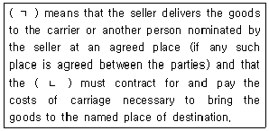
- ㄱ: CPT ㄴ: buyer
- ㄱ: CPT ㄴ: seller
- ㄱ: DDP ㄴ: seller
- ㄱ: CIP ㄴ: buyer
- ㄱ: DDP ㄴ: buyer
(정답률: 42%)
100. New York Convention(1958)의 일부이다. ( )에 들어갈 용어로 옳은 것은?
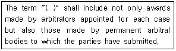
- arbitral awards
- agreement to refer
- agreement in writing
- submission agreement
- alternative dispute resolution
(정답률: 21%)
101. 무역계약의 품질조건에 관한 설명으로 옳지 않은 것은?
- Sales by Sample은 거래될 물품의 견본에 의하여 품질을 결정하는 방법이다.
- Rye Terms는 호밀(rye) 거래에서 사용되기 시작한 것으로 물품 도착 시 손상되어 있는 경우 그 손해를 매도인이 책임지는 양륙품질조건이다.
- FAQ는 양륙지에서 해당 연도에 생산되는 동종의 수확물 가운데 평균적이며, 중 등의 품질을 표준으로 하여 거래물품의 품질을 결정하는 방법이다.
- Sales by Specification은 기계류나 선박 등의 거래에서 거래대상 물품의 소재, 구조, 성능 등에 대해 상세한 명세서나 설명서 등에 의하여 품질을 결정하는 방법이다.
- GMQ는 목재, 원목, 냉동어류 등과 같이 물품의 잠재적 하자나 내부의 부패 상태를 알 수 없는 경우, 상관습에 비추어 수입지에서 판매가 가능한 상태일 것을 전제조건으로 하여 거래물품의 품질을 결정하는 방법이다.
(정답률: 38%)
102. 종합인증우수업체 공인 및 관리업무에 관한 고시상 동 고시의 적용대상으로 옳지 않은 것은?
- 세관
- 관세사
- 하역업자
- 선박회사
- 항공사
(정답률: 26%)
103. 선하증권 작성에 관한 설명으로 옳지 않은 것은?
- Container No.란에는 화물이 적입된 컨테이너 번호를 표기한다.
- Place of Delivery란에는 운송인의 책임 하에 화물을 운송하여 수하인에게 인도 하는 장소를 명시한다.
- Notify Party란에는 수입업자 또는 수입업자가 지정하는 대리인이 기재된다.
- Final Destination란에는 화물의 최종 목적지를 표시한다.
- Gross Weight란에는 포장의 무게가 포함된 총중량 및 컨테이너 개수를 명시한다.
(정답률: 31%)
104. 다음은 UCP 600과 eUCP(v1.1)의 내용이다. ( )에 들어갈 숫자로 옳은 것은?
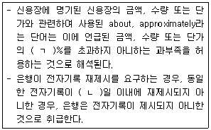
- ㄱ: 5 ㄴ: 10
- ㄱ: 5 ㄴ: 20
- ㄱ: 5 ㄴ: 30
- ㄱ: 10 ㄴ: 20
- ㄱ: 10 ㄴ: 30
(정답률: 22%)
1⑤. ICD(Inland Container Depot)의 기능에 관한 설명으로 옳지 않은 것은?
- 공컨테이너 장치장으로도 활용되고 있다.
- LCL 화물의 혼재 및 배분 기능을 수행한다.
- 연계운송체계가 불가능하며, 컨테이너 정비ㆍ수리는 이루어지지 않는다.
- 화물유통기지, 물류센터로 활용하여 불필요한 창고 이동에 따른 비용을 절감할 수 있다.
- 수출입화물의 수송거점일 뿐만 아니라 화주의 유통센터 또는 창고 기능까지 담당하고 있다.
(정답률: 50%)
106. 항공화물의 품목분류요율(Commodity Classification Rate) 중 할인요금 적용품목으로 옳지 않은 것은?
- 신문
- 점자책
- 유가증권
- 카탈로그
- 정기간행물
(정답률: 50%)
107. 선하증권으로서 필요한 기재사항은 갖추고 있으나 일반선하증권에서 볼 수있는 이면약관이 없는 선하증권은?
- Stale B/L
- House B/L
- Through B/L
- Short Form B/L
- Forwarder's B/L
(정답률: 43%)
108. UNCTAD/ICC 복합운송증권에 관한 국제규칙(1992)의 내용이다. ( )에 들어갈 숫자로 옳은 것은?
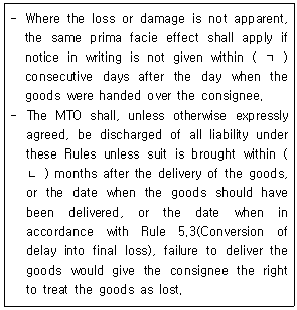
- ㄱ: 6 ㄴ: 9
- ㄱ: 6 ㄴ: 12
- ㄱ: 7 ㄴ: 15
- ㄱ: 7 ㄴ: 18
- ㄱ: 9 ㄴ: 24
(정답률: 28%)
109. 만재흘수선 마크와 설명으로 옳지 않은 것은?
- S: The Summer Load Line
- W: The Winter Load Line
- T: The Tropical Load Line
- TF: The Tropical Fresh Water Load Line
- WNA: The Winter North Africa Load Line
(정답률: 47%)
110. NYPE(1993)에 따른 기간용선(time charter)계약에서 선주와 용선자의 권리와 의무에 관한 설명으로 옳지 않은 것은?
- 선주는 선장 및 선원을 고용하고 임금을 지불해야 한다.
- 선주는 선박이 안전한 항구와 항구 사이를 운항할 것과 적법한 항해에 사용될 것을 용선자에게 요구할 수 있다.
- 선주는 용선기간 중 선박의 운항에 필요한 연료비용을 부담해야 한다.
- 용선자는 용선한 선박으로 제3자와 재용선계약을 체결할 수 있다.
- 용선자는 선장에게 항해를 지시할 수 있다.
(정답률: 29%)
111. 해운동맹 운영 수단 중 그 성격이 다른 것은?
- 운임협정(rate agreement)
- 항해협정(sailing agreement)
- 공동계산협정(pooling agreement)
- 계약운임(contract rate system)
- 공동운항(joint service)
(정답률: 46%)
112. 국제항공의 안정성 확보 및 항공질서 감시를 위한 UN 산하 기구는?
- 국제민간항공기구(ICAO)
- 국제항공운송협회(IATA)
- 국제항공연맹(FAI)
- 국제운송주선인협회(FIATA)
- 국제상업회의소(ICC)
(정답률: 46%)
113. Warsaw Convention(1929)에 근거한 항공운송서류에 관한 설명으로 옳은 것은?
- 운송인용 원본에는 운송인의 서명이 있어야 한다.
- 항공운송서류가 분실되거나 잘못 작성된 경우 항공운송계약이 취소된다.
- 송하인의 요구가 있을 경우 운송인은 송하인을 대신하여 항공운송서류를 작성할 수 있다.
- 화물에 관한 내용이 운송서류에 잘못 기입된 경우, 이는 운송인의 책임이다.
- 수하인용 원본에는 수하인의 서명이 필요하다.
(정답률: 40%)
114. 항공화물운임에 관한 설명으로 옳은 것은?
- 품목분류요율(CCR)은 항공화물운송 요금 산정 시 가장 기본이 되는 요율이다.
- 특정품목 할인요율(SCR)은 일반화물요율보다 높은 수준으로 설정된다.
- 항공화물요율이 변경될 경우 반드시 사전에 공시되어야 한다.
- 항공화물요율은 송하인의 문전에서 수하인의 문전까지를 계산하여 설정된다.
- 단위탑재요금(BUC)은 탑재용기의 형태 및 크기에 따라 상이하게 적용된다.
(정답률: 41%)
115. 항공화물운송에 관한 설명으로 옳은 것은?
- 운송인의 손해를 보호하기 위해 운송인이 부보하는 보험을 항공적하보험이라 한다.
- 항공시장의 자유화로 인해 항공사간 전략적 제휴는 점차 감소하는 추세이다.
- 항공운송은 석탄이나 철광석과 같은 벌크화물을 운송하는 데 적합하다.
- 운송인이 보험자의 대리인 자격으로 화주와 계약을 체결하는 보험을 항공화물화 주보험이라 한다.
- UCP 600에 의하면 항공운송서류에는 반드시 화물의 선적일이 표시되어야 한다.
(정답률: 32%)
116. 항해용선계약서의 표준약관인 GENCON(1994)의 내용에 관한 설명으로 옳지 않은 것은?
- 용선자는 용선료를 선불(prepaid) 또는 착불(on delivery)로 지급할 수 있다.
- 선박이 선적항에 도착한 후 항만에서 파업이 발생할 경우, 선주는 파업이 종료될 때까지 항구에 선박을 대기시켜야 한다.
- 결빙으로 인해 선박이 양륙항에 도착할 수 없는 경우, 용선자는 선주 또는 선장에게 안전한 항구로 항해하도록 지시할 수 있다.
- 선주가 계약해지일까지 선적 준비를 완료하지 못한 경우, 용선자는 용선계약을 해지할 수 있다.
- 용선료를 선불로 지급한 경우, 용선자는 용선료를 반환받을 수 없다.
(정답률: 25%)
117. 다음 ( )에 들어갈 용어로 옳은 것은?
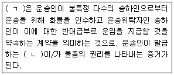
- ㄱ: 용선계약 ㄴ: 용선계약서
- ㄱ: 용선계약 ㄴ: 선하증권
- ㄱ: 개품운송계약 ㄴ: 선하증권
- ㄱ: 개품운송계약 ㄴ: 용선계약서
- ㄱ: 개품운송계약 ㄴ: 수입화물선취보증장
(정답률: 47%)
118. 물류 관련 용어의 약술로 옳은 것은?
- WMS: Warehouse Management System
- RTLS: Real-Time Logistics Service
- SCM: Supply Chain Marketing
- CPFR: Collaborative Production, Forecasting and Replenishment
- VMI: Visual Management Inventory
(정답률: 44%)
119. 신용장거래에 관한 설명으로 옳은 것은?
- 신용장은 취소가능 혹은 불가능에 관한 아무런 표시가 없으면 취소가능한 것으로 간주한다.
- 신용장 당사자의 합의에 의해 신용장조건을 변경하는 경우, 조건변경의 부분승낙은 허용되지 않으며 거절로 간주한다.
- 선적일자의 표기에서 until, from, before, between은 당해 일자를 포함한다.
- 신용장의 유효기일과 신용장에 규정된 선적기일이 지정된 은행의 휴업일에 해당하는 경우 두 기일 모두 다음 최초영업일까지 연장된다.
- 신용장거래에서 은행은 무고장 운송서류만을 수리하므로 “무고장(clean)”이라는 단어가 운송서류에 명확하게 표기되어야 한다.
(정답률: 32%)
120. 선박의 톤수에 관한 설명으로 옳은 것은?
- 순톤수(Net Tonnage): 상행위에 직접 사용되는 장소만을 계산한 용적으로, 관세나 도선료, 검사수수료 등 제세금의 부과기준이 된다.
- 배수톤수(Displacement Tonnage): 선체의 수면 아랫부분인 배수용적에 상당하는 물의 중량을 선박의 전체 중량으로 나타낸 것으로, 군함이나 상선의 크기를 표시하는 기준이다.
- 총톤수(Gross Tonnage): 선박의 밀폐된 내부 전체 용적을 나타내는 것으로, 기관실이나 조타실, 취사실 등의 용적을 포함한다.
- 재화용적톤수(Measurement Tonnage): 선박의 각 선창(hold)의 용적과 특수화물의 창고 용적 등 전체 선박의 용적을 나타낸다.
- 재화중량톤수(Dead Weight Tonnage): 선박의 만재흘수선에 상당하는 배수량과 경하배수량의 차이로, 선박이 적재할 수 있는 화물의 최소중량을 나타낸다.
(정답률: 13%)
- "ㄴ"은 GPS(Global Positioning System)로 차량 위치를 파악하고, 차량의 운행 정보를 수집하는 위치추적시스템입니다.
- "ㄹ"은 RFID(Radio Frequency Identification) 기술을 이용하여 차량의 정보를 자동으로 인식하고 처리하는 자동인식시스템입니다.
따라서, 이 두 시스템은 첨단화물운송시스템(CVO)의 하부시스템으로 분류됩니다.